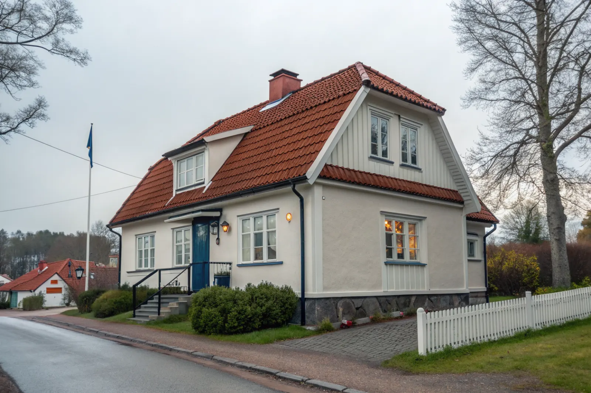

Takbyte i Solna
Byte av tegel-, betong- och plåttak.
Takbyte i Solna →Solna gränsar till Sundbyberg och är ett av våra vanligaste arbetsområden. Vi hjälper villaägare i bland annat Råsunda, Råsta och Stocksundstorp med takbyte, takrenovering och plåtarbeten.
Solna gränsar direkt till både Sundbyberg och Bromma, och villabebyggelsen är koncentrerad till områden som Råsunda villastad, Råsta egnahem, Stocksundstorp och Bergshamra by. Många villor är byggda mellan 1920- och 1960-talet, och en stor andel av taken närmar sig nu slutet av sin tekniska livslängd.
I Råsunda villastad ser vi ofta klassiska tegeltak där pannorna är hela men underlagspapp och läkt är uttjänta – då räcker det ibland med en takomläggning istället för fullt byte. I Stocksundstorp, där villorna är från olika tider och flera har lägre lutning, är plåt- och papptak vanligare.
Solnas blandning av epoker gör att vi nästan alltid börjar med en besiktning för att avgöra rätt åtgärdsnivå. Vår närhet till Solna innebär att vi kan hålla tät kontakt genom hela projektet och snabbt komma ut på uppföljning.
Oavsett om du behöver ett komplett takbyte eller en riktad renovering ger vi en tydlig bedömning och offert. Vi arbetar även i grannområden – se alla områden vi arbetar i.

I Råsunda villastad finns många villor och mindre flerfamiljshus från 1920–40-talet med tegeltak. Pannorna har ofta lång livslängd kvar, men läkten och underlagspappen är uttjänta – ett typiskt fall för takomläggning snarare än nytt tak.
I Bergshamra by och Stocksundstorp finns villor från olika tider, flera med lägre taklutning där plåt och papp är vanligare. Låglutande tak är känsligare för läckage i skarvar och genomföringar, och här lönar det sig att regelbundet kontrollera plåtdetaljer och avvattning. Närheten till Brunnsviken och Ulriksdals grönområden ger också mer löv och påväxt på taken.
Solna har en blandning av äldre villor och tät stadsbebyggelse. På tomter nära gata planerar vi ställning och avspärrning så att arbetet går säkert, och vid behov hjälper vi till med tillstånd för att ställa container på allmän mark.
I Solna krävs bygglov för att byta takmaterial inom detaljplan, och de flesta områden har detaljplan, enligt Solna stad. Samma pannor på nytt underlag ändrar inte utseendet – stäm av med Solna stad innan arbetet planeras.
Villaområdena i Solna är få men kulturhistoriskt känsliga, från Råsunda till Stocksundstorp – vad en renovering omfattar där och vilka regler som gäller går vi igenom under takrenovering i Solna.
Byte av tegel-, betong- och plåttak.
Takbyte i Solna →Riktade åtgärder som förlänger takets liv.
Takrenovering i Solna →Bedömning av skick inför beslut.
Takbesiktning i Solna →Nytt ytskydd på plåttak.
Takmålning i Solna →Skonsam tvätt och mossbehandling.
Taktvätt i Solna →Nytt plåttak och plåtarbeten.
Plåttak i Solna →Vi utgår från Bromma och når Solna snabbt. Det gör att vi kan komma ut på besiktning utan långa väntetider och hålla nära kontakt genom hela projektet.
Läs mer om tak på villa eller jämför takbyte och takrenovering innan du bestämmer dig.
Vi arbetar även i Sundbyberg.
Takläggare i Sundbyberg →Vi arbetar även i Bromma.
Takläggare i Bromma →Vi arbetar även i Danderyd.
Takläggare i Danderyd →Vi arbetar även i Sollentuna.
Takläggare i Sollentuna →